estudantes capacitados
Robótica, programação e cultura digital em atividades práticas.
Projeto cultural PNAB 2025
O CyberAjuda reuniu oficinas gratuitas de robótica e programação, um festival regional em espaço público e uma ação de divulgação científica para crianças e jovens.
Cultura digital em movimento
O CyberAjuda integrou formação em robótica e programação, participação estudantil e atividades abertas ao público em diferentes espaços da cidade.
Entre junho e setembro de 2025, o projeto realizou oficinas em escolas públicas e privadas, formou equipes estudantis, promoveu um festival regional de dois dias na Praça Nilo Peçanha e ampliou sua programação com uma ação experimental de divulgação científica.
Projeto contemplado no Chamamento Público nº 001/2025 (PNAB/BP).
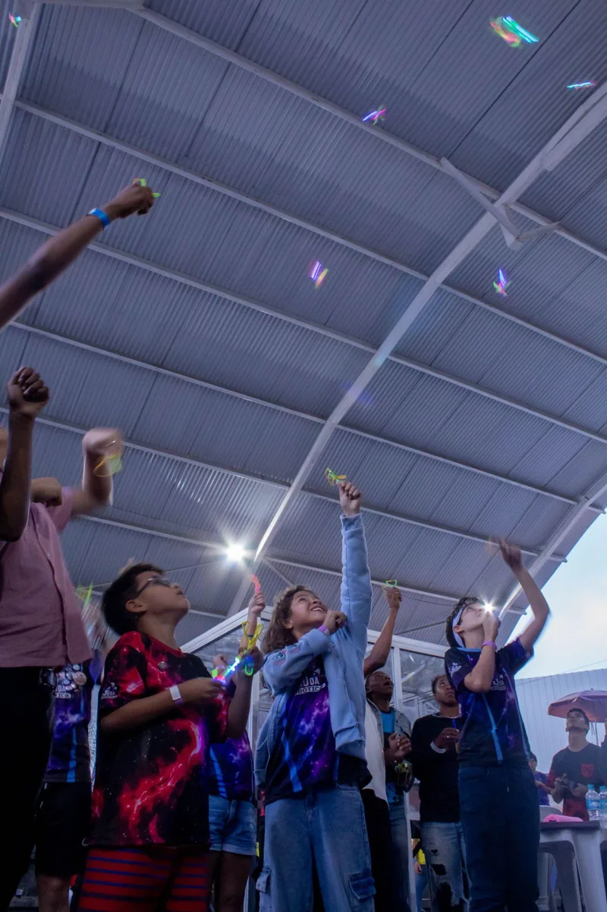
Robótica, programação e cultura digital em atividades práticas.
Equipes locais e convidadas em intercâmbio regional.
Famílias, professores, estudantes e comunidade na praça pública.
Escolas, universidade, coletivos e espaços de tecnologia.
A jornada cultural
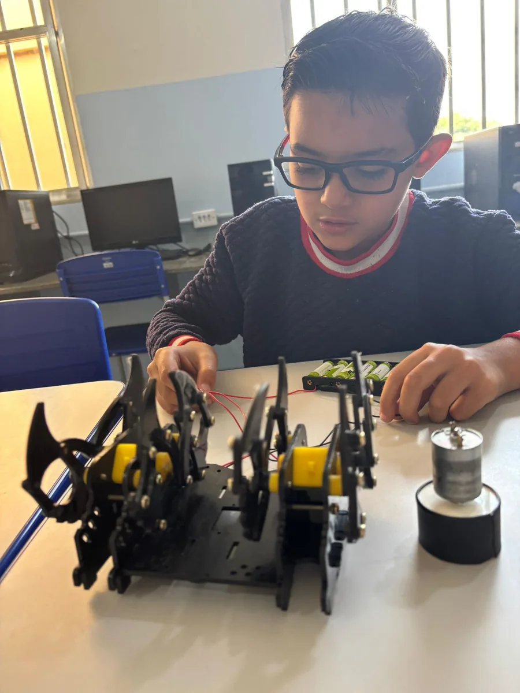
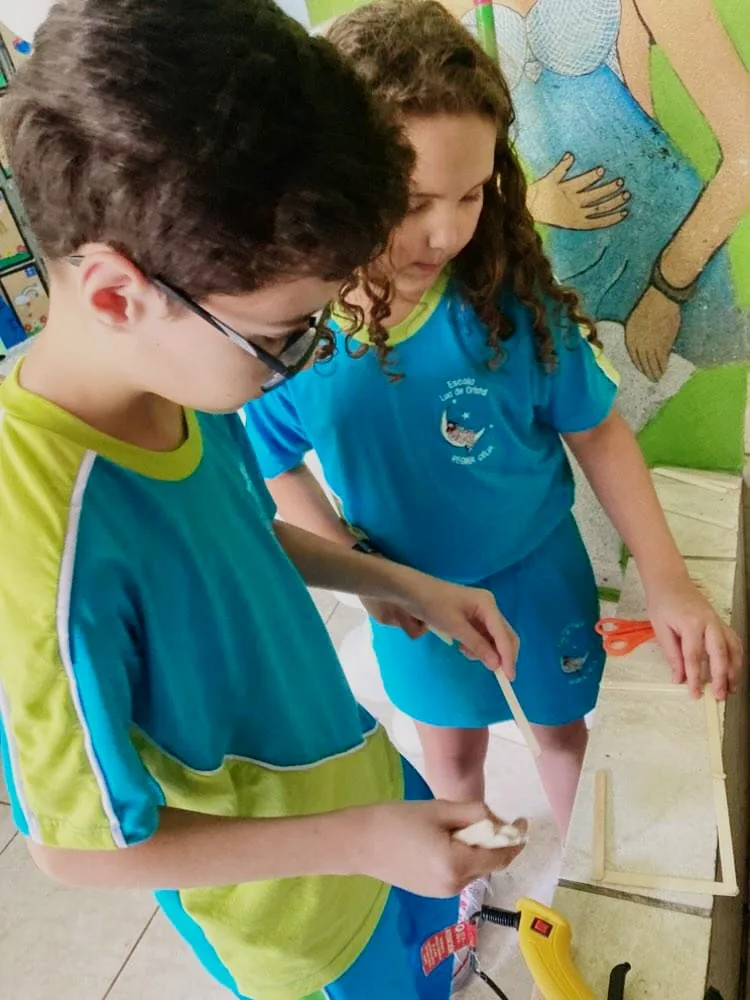
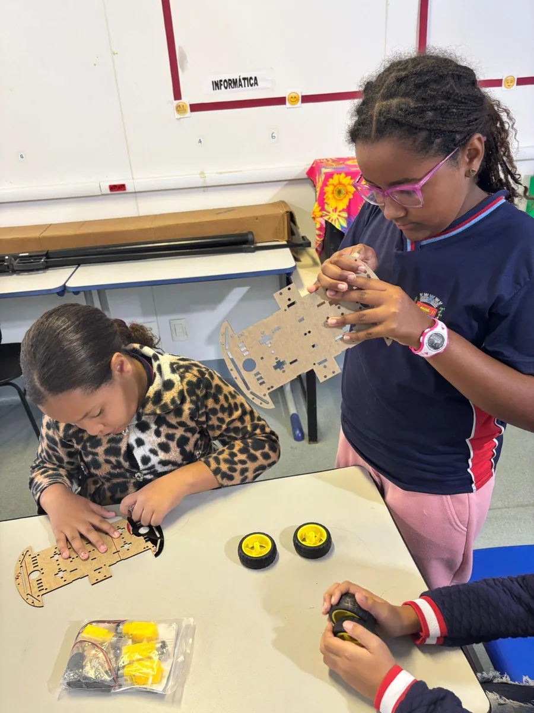
Oficinas formativas
As oficinas gratuitas de introdução à robótica, programação e tecnologias educacionais foram realizadas em quatro escolas públicas, duas escolas privadas e, de forma complementar, em uma instituição social.
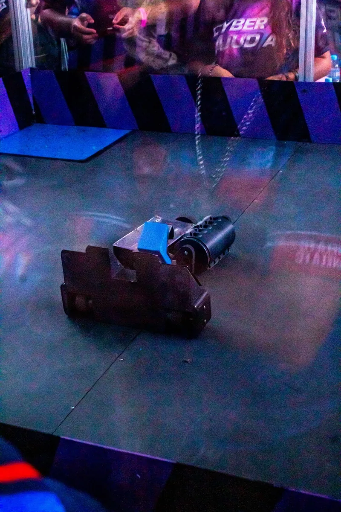
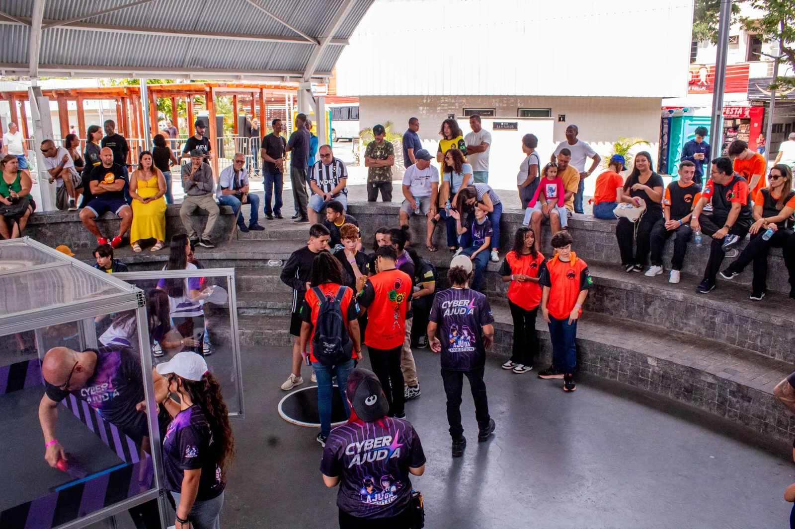
Festival regional
Nos dias 5 e 6 de setembro, o público encontrou competições de robótica em diferentes modalidades, oficinas abertas, atividades recreativas, exposições e momentos de troca entre equipes de várias cidades.
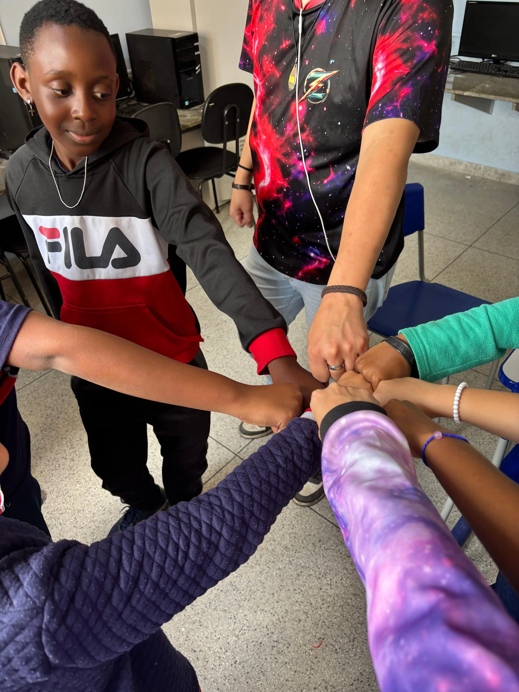
Inclusão e acolhimento
As oficinas contaram com mediação educacional, apoio individualizado e adaptações pedagógicas. Durante o festival, uma área de acolhimento fortaleceu o conforto e a integração de crianças neuroatípicas e suas famílias.
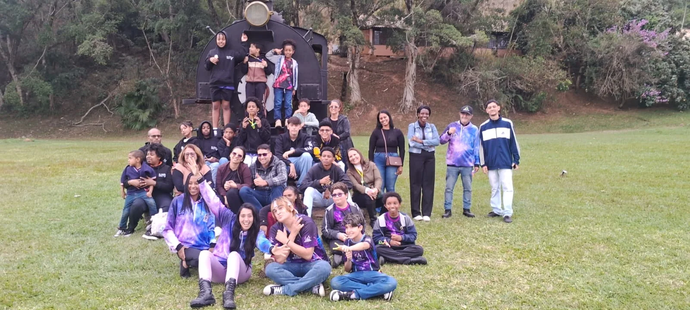
Divulgação científica
Em 7 de setembro, estudantes e responsáveis participaram do lançamento de um balão de hélio com asa voadora, em uma atividade de divulgação científica. A atividade aproximou conceitos de física, engenharia e aerodinâmica da experimentação prática.
Legado cultural
O legado do projeto aparece nas competências desenvolvidas, nas conexões criadas e na ampliação do acesso público à ciência e à tecnologia.
Estudantes construíram, programaram, testaram e apresentaram soluções próprias.
Escolas, coletivos, universidade, famílias e equipes de outras cidades em diálogo.
Conhecimento técnico apresentado de forma pública, lúdica e participativa.
Registros audiovisuais e digitais preservam a experiência e ampliam seu alcance.
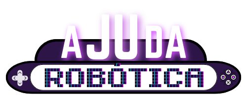
Ajudar hoje para transformar o amanhã.
Instituição realizadora
A Ajuda Robótica é uma empresa voltada à educação tecnológica, à robótica e ao desenvolvimento de experiências formativas que aproximam conhecimento, criatividade e prática.
Seu braço social e institucional, o Instituto Ajuda Robótica, amplia essa atuação por meio de programas, projetos, ações e parcerias voltados especialmente ao desenvolvimento de crianças, adolescentes e jovens. A tecnologia é utilizada como ferramenta transversal para ampliar acesso, aprendizagem, autonomia e protagonismo.
O Instituto organiza sua atuação em quatro áreas permanentes:
O CyberAjuda materializa esse compromisso ao conectar formação tecnológica, participação estudantil, ciência, cultura e ocupação de espaços públicos em uma experiência aberta à comunidade.
Memória visual
Projeto em movimento
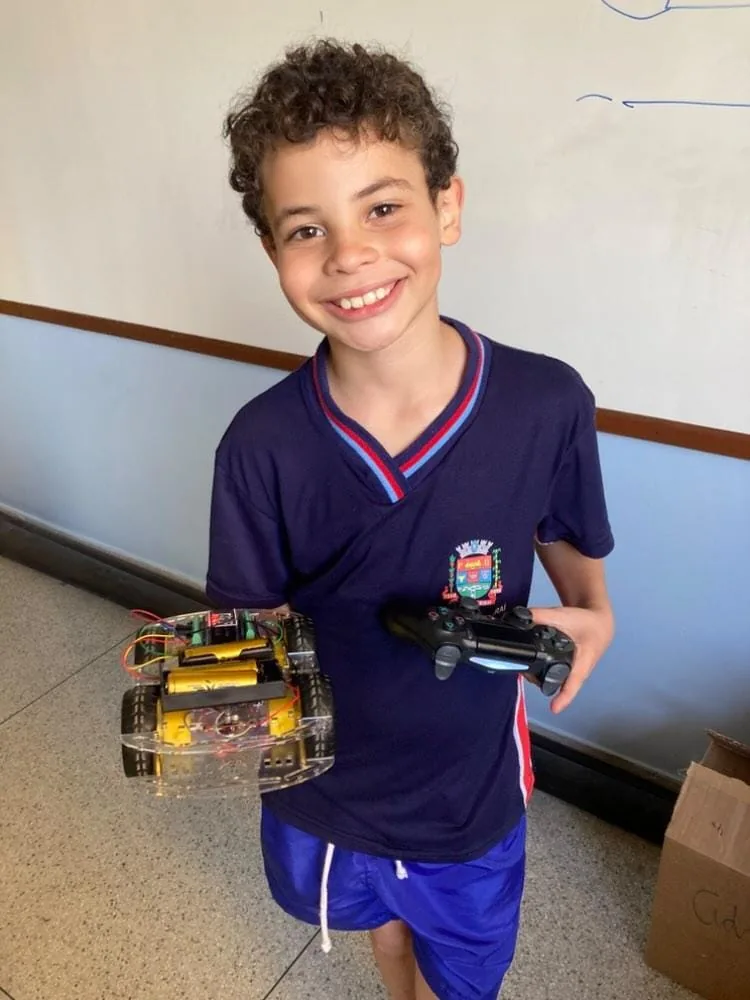
Conheça o processo de aprendizagem e montagem realizado nas escolas.

O início da ocupação cultural e tecnológica da Praça Nilo Peçanha.
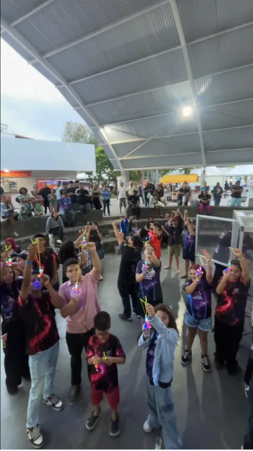
Resultados, apresentações e a energia coletiva do encerramento.
Lançamento de um balão de heteo com asa voadora, em uma atividade prática com estudantes e responsáveis.
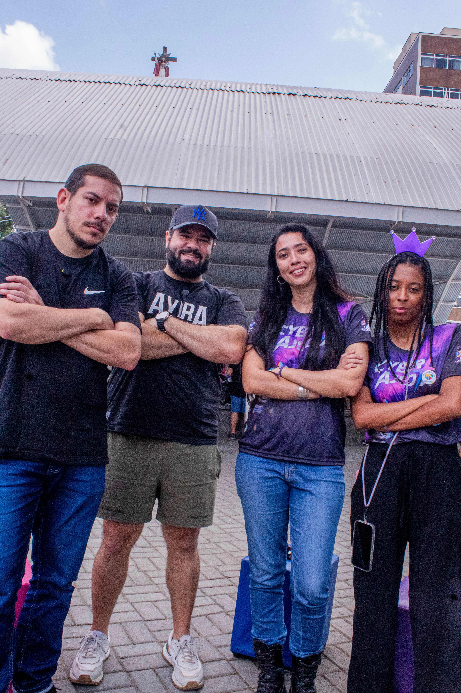
Conversas com participantes, equipe e apoiadores sobre o impacto do projeto.
Cultura, ciência e futuro
O CyberAjuda conectou formação, ciência e cultura digital em escolas e espaços públicos, ampliando oportunidades de participação e experimentação.